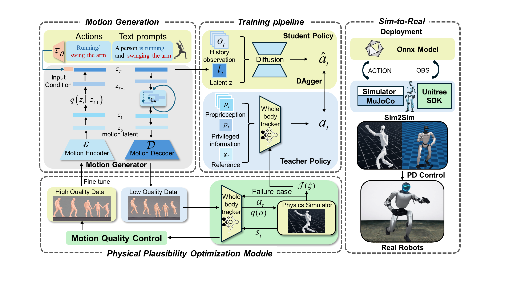

Text-guided Whole-Body Locomotion for Humanoids

*Equal contribution †Corresponding author
Abstract
While generative models have become effective at producing human-like motions from text, transferring these motions to humanoid robots for physical execution remains challenging. Existing pipelines are often limited by retargeting, where kinematic quality is undermined by physical infeasibility, contact-transition errors, and the high cost of real-world dynamical data. We present a unified latent-driven framework that bridges natural language and whole-body humanoid locomotion through a retarget-free, physics-optimized pipeline. Rather than treating generation and control as separate stages, our key insight is to couple them bidirectionally under physical introduce a Physical Plausibility Optimization (PP-Opt) module as the coupling interface. In the forward direction, PP-Opt refines a teacher-student distillation policy with a plausibility-centric reward to suppress artifacts such as floating, skating, and penetration. In the backward direction, it converts reward-optimized simulation rollouts into high-quality explicit motion data, which is used to fine-tune the motion generator toward a more physically plausible latent distribution. This bidirectional design forms a self-improving cycle: the generator learns a physically grounded latent space, while the controller learns to execute latent-conditioned behaviors with dynamical experiments on the Unitree G1 humanoid show that our bidirectional optimization improves tracking accuracy and success rates. Across IsaacLab and MuJoCo, the implicit latent-driven pipeline consistently outperforms conventional explicit retargeting baselines in both precision and stability. By coupling diffusion-based motion generation with physical plausibility optimization, our framework provides a practical path toward deployable text-guided humanoid intelligence.
Framework

RoboForge framework overview.
BibTeX
@article{yuan2026roboforge,
title={RoboForge: Physically Optimized Text-guided Whole-Body Locomotion for Humanoids},
author={Yuan, Xichen and Li, Zhe and Lyu, Bofan and Zuo, Kuangji and Lu, Yanshuo and Li, Gen and Yang, Jianfei},
journal={arXiv preprint arXiv:2603.17927},
year={2026},
url={https://arxiv.org/abs/2603.17927}
}